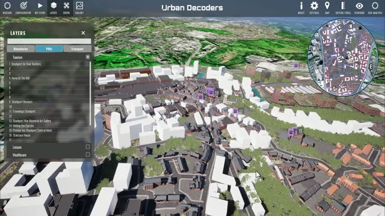
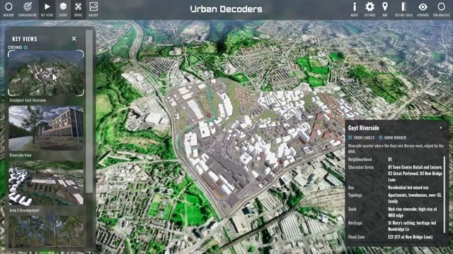
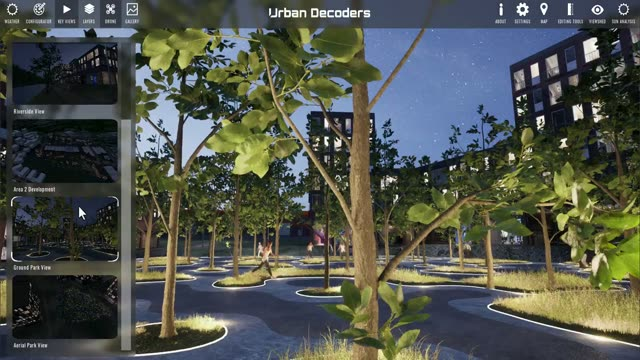
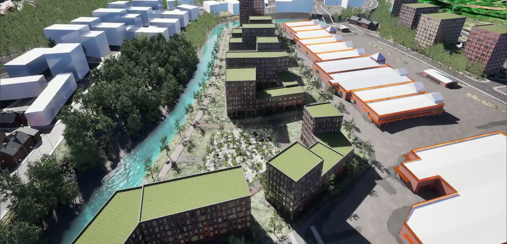

生きたデジタルツインで行う、計画・開発・デザイン。
ひとつのモデルで、4つのサービスを提供します。ツインは一度だけ構築し、座標系（CRS）を明記して実際の座標に合わせます。以下のサービスはすべて、その上のレイヤーです。計画シナリオ、リアルタイムの都市の様子、住民の意見募集、そして完成後にその場所を運営するダッシュボードです。
敷地・地区・都市の生きたモデル。
地形、区画、ネットワーク、制約条件、建物のデータを、GIS・BIM・オープンデータから集めます。それを、座標系（CRS）を明記したひとつの基盤にまとめ、実際の座標に合わせます。完成したモデルは、誰でもリンクから開けるWebビューアとして提供します。計画どおりの姿も、現在の街の動きも表示できます。
- 入力RVT、IFC、3DM、SKP、DWG、GPKG、GeoJSON、点群、3D Tiles
- 基本周辺環境のレイヤー、敷地または計画案のボリューム、Webビューア、全データの引き渡し
- 規模敷地は5 ha未満、地区は100 haまで、それ以上は都市。どの規模でも同じ基盤


タイルにカーソルを合わせると再生します。ストックポート・イーストのツインで収録しました。


タイルにカーソルを合わせると再生します。ストックポート・イーストのツインで収録しました。
説明の場に出す前に、計画案を検証する。
ボリューム、密度、フェーズ計画、日射、眺望、公共交通へのアクセスを、実際の敷地でモデル化します。案ごとに比較でき、パラメータを動かすと数値も再計算されます。申請用の検証済み眺望（Verified Views）と景観影響の資料も用意します。そのため、計画委員会に示すのは絵ではなく根拠になります。
- シナリオ密度、高さ、フェーズ計画、用途構成を、ひとつの画面で並べて比較
- 解析日射、眺望解析、検証済み眺望、公共交通へのアクセス、任意の時刻の日影
- 根拠延床面積（GFA）、建蔽率、用途構成をその場で再計算し、申請資料に書き出し
私たちと同じように、密度をリアルタイムで検証する。
私たちのマスタープラン検討ツールの簡易版が、このページで動きます。スライダーを動かして、計画案と数値が再生成される様子をご覧ください。完全版のエンジンはUnrealで、実際の敷地を使って動きます。
ブラウザ用の簡易デモです。形状はあくまで目安です。製品版の検討ツールでは、駐車場、セットバック、採光、コストのモデルが加わります。
図面の上の都市だけでなく、動いている都市。
その場所ですでに生まれているデータをつなぎます。交通量カウンターと信号システム、バスと鉄道のリアルタイムデータ、CCTV解析、大気質モニター、歩行者通行量センサー、建物設備などです。これらを実際の場所の上に表示し、リアルタイムで更新します。履歴も残るので、見えてきた傾向を意思決定につなげられます。
- 接続TfGM・Bee Network、Network Rail Darwin、DEFRA AURN、SCOOT・UTMC、自治体のCCTV、LoRaWAN、お手持ちのデータベース
- 成果物ツイン上のリアルタイムレイヤー、エリアマネジメント用ダッシュボード、しきい値に応じたアラート、任意の日を再生できる時間スライダー
- 取り扱いCCTVは匿名化した集計値のみ。各データは所有者の条件に従って利用。公共機関の調達と監査に対応



タイルにカーソルを合わせると再生します。ストックポート・イーストのツインで収録しました。



タイルにカーソルを合わせると再生します。ストックポート・イーストのツインで収録しました。
人々が実際に参加する意見募集。
住民は自分の住む通りから計画案を見て回り、現在の様子と比べ、コメントしたい場所に直接ピンを立てます。すべて記録され、書き出せます。そのため、意見募集の報告書はほぼ自動でまとまり、反対意見も内容を理解したうえで寄せられます。まちびらき後は、同じツインがその場所を運営するダッシュボードになります。
- 住民自宅の前から歩いて確認、主要眺望、任意の時刻の影、その場所に直接コメント
- 自治体担当者コメントの管理、テーマ別の整理、申請資料への書き出し、委員会向けの要約
- 会場Webリンク、メディアテーブル、キオスク、ヘッドセット。すべて同じモデルから
計画にコメントを残す。
私たちのプラットフォームでの意見募集は、このような使い心地です。航空写真のどこかをクリックし、意見を書いて、立場を選んでください。記録が増えていく様子を確認できます。実際のプラットフォームでは、すべてのピンが記録されて地図に表示され、意見募集の報告書用に書き出せます。

デモです。コメントはこのページ上にだけ表示され、保存も送信もされません。製品版のプラットフォームでは、コメントの管理、テーマ別の整理、書き出し、監査用の完全な記録が加わります。
ひとつのモデル。会議や会場で見せる4つの方法。


対象エリアのWebビューアを、私たちがホスティングして提供します。レイヤー、ストーリー、POIをリンクひとつで見られます。どのデバイスでも使え、インストールは不要です。
意見募集のイベント、展示会、委員会室で使う大型タッチ画面です。ビジターセンターへの常設にも対応します。
ツインから、歩行者視点とドローン視点のウォークスルーをつくります。Web版、または発表会や公開イベント向けのVRとして提供します。
まちびらき後は、同じツインでその場所を運営します。資産、利用状況、環境、歩行者通行量をひとつの画面で確認でき、しきい値に応じてアラートを出します。
ビューアにある16のツールの一覧は、機能一覧をご覧ください。

いま使っているツールと連携。
ツインが役立つのは、手元にあるデータを取り込めるときだけです。Revit・Rhino・Grasshopperのモデル、SketchUp・AutoCAD・3ds Maxのファイル、QGISのレイヤー、Blenderのシーン、Excelの一覧表を読み込み、実際の座標に合わせたひとつの基盤にまとめます。結果は同じ形式でお返しします。
- 入力 RVT、IFC、3DM、GH、SKP、DWG、DXF、MAX、FBX、GPKG、GeoJSON、SHP、XLSX
- 出力 GLB、FBX、3D Tiles、IFC、GeoJSON、XLSXの一覧表、ツインから書き出したPNG・MP4
- 連動 GrasshopperのパラメータとExcelの用途構成を、スライダーとしてモデルに反映
スタジオとの仕事の進め方。
ひとつの敷地、3つのレイヤーを数週間で。
- 座標系（CRS）を明記した周辺環境モデル
- 数値付きの容量検討とボリューム案
- 事前協議で使うWebビューア
地区全体で、計画、検証、意見募集を行います。
- 周辺環境、ボリューム、交通のレイヤー
- シナリオ比較と住民参加のレイヤー
- リアルタイムデータと、6か月間のデータ同期
まち全体を、最初から最後まで、動き続けるツインにします。
- リアルタイムデータとエリアマネジメント用ダッシュボードを備えた都市スケールのツイン
- 運用センター用の大型画面、メディアテーブル、ヘッドセット向けの制作
- 継続的なデータ連携と保守
すべての案件は、支えるべき意思決定に合わせて作業範囲を決めます。スコープ試算で区分とスケジュールを確認し、敷地の範囲をお送りください。